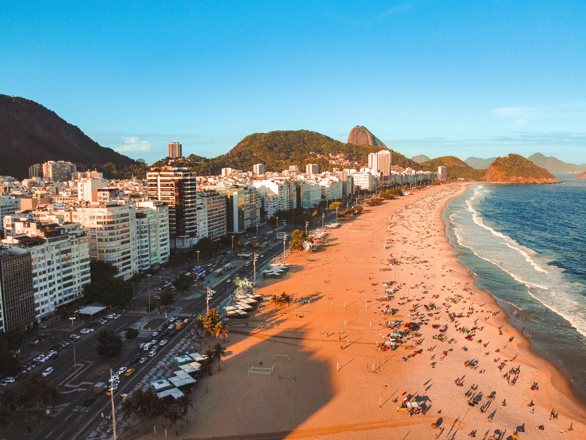

Copacabana

Copacabana é um bairro situado na Zona Sul do município do Rio de Janeiro, no Brasil. É considerado um dos bairros mais famosos e prestigiados do Brasil e um dos mais conhecidos do mundo. Tem o apelido de Princesinha do Mar e Coração da Zona Sul.
Como chegar?
Se você chegar antes das 22h no terminal rodoviário, é uma opção viável, caso seja depois, desconsidere essa opção. A localização do ponto fica a uns 150m da rodoviária, localizado no Terminal Municipal Henrique Ote, a linha é TRO02/Jardim de Alah. A estação de metrô Siqueira Campos é a mais próxima a Copacabana.
O que fazer?
O bairro de Copacabana conta com diversos atrativos como o forte de Copacabana, forte Duque de Caxias, teatros, restaurantes, bares, quiosques mas o que mais se destaca é a sua praia e o calçadão de copacabana, sendo uma das praias mais famosas dos Rio.